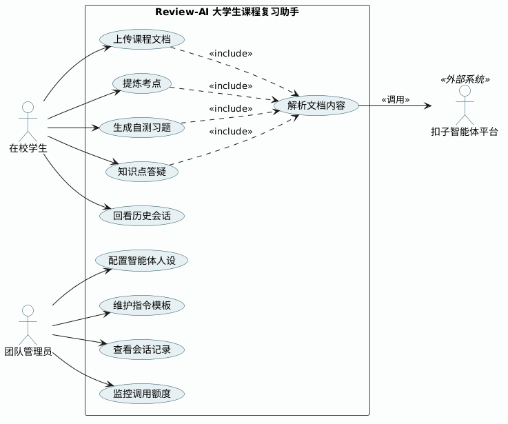
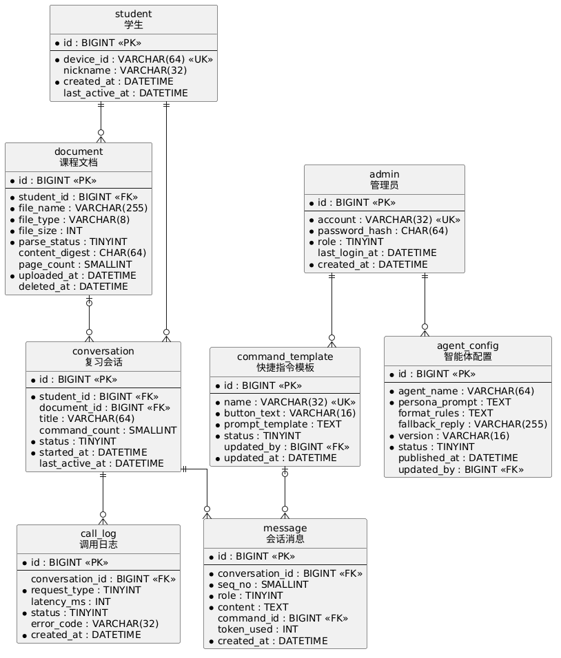

Review-AI · UML 与 ER 图集
共 8 张（UML 7 张 + ER 1 张）｜ 源文件 .puml 可随时改 ｜ PNG 直接插入 Word，SVG 用于高清印刷
用法：文档里每张图按「图 3-1 ×××」编号，图下方配下面的图说文字即可。要改内容，编辑同名
.puml 文件后重新渲染（python render.py），不要用图片工具涂改。
需求分析
图 3-1 系统用例图

参与者：在校学生 / 团队管理员 / 扣子平台（外部系统）
系统包含两类人类参与者：在校学生（前台使用者）与团队管理员（后台运维者），以及一个外部系统参与者扣子智能体平台。学生侧 5 个用例覆盖"上传—提炼—出题—答疑—回看"的完整复习闭环；管理员侧 4 个用例对应配置、模板、记录、额度四类运维动作。四个问答类用例均 include「解析文档内容」，说明文档解析是本系统的公共前置能力，而非某个功能私有的逻辑——这也是把它单独设计成插件的依据。
业务流程

图 3-2 活动图：文档上传与解析
描述从选择文件到资料可用的完整流程，含两道判定：格式与大小校验（PDF / TXT 白名单、单文件 ≤ 20MB）在浏览器端完成，避免无效上传；文本可提取性判定由扣子解析插件返回，失败时进入"解析失败"分支并引导改用文字版 PDF。该分支与第一次作业风险分析中的第 2 条（扫描版 PDF 识别效果差）形成对策闭环。
业务流程

图 3-3 活动图：快捷指令问答
核心业务流程。三个判定节点体现系统的约束设计：是否已选中文档（前置条件）、是否属于课程域（人设约束）、格式是否合规（输出约束，最多重试 2 次）。越界问题不进入大模型生成，直接返回固定话术，从而保证 token 消耗可控、回答不跑偏。这是"智能体作为系统内置能力而非通用聊天"的具体实现方式。
重要算法 / 交互

图 4-1 时序图：文档上传与解析
五个对象、两条 alt 分支。设计要点：前端在上传前完成校验（服务端不做二次校验，因本系统无自建后端，这是明确的架构取舍）；解析插件返回文本后，前端仅把文档元数据写入 localStorage，正文不落库，体现"轻后端"形态。
重要算法 / 交互

图 4-2 时序图：快捷指令问答
一次问答请求的完整消息序列。关键在于智能体 Agent 的两处自处理步骤（6. 校验问题域、9. 格式校验）——它们不额外调用模型，是控制响应时延与费用的主要手段。返回采用流式，前端边接收边渲染，用户感知时延从 8 秒降至 2 秒左右。
对象协作

图 4-3 协作图：问答场景对象协作
以同一问答场景，从对象结构视角展示 5 个对象的协作与消息编号。1.1–1.10 的编号体现"页面触发 → 控制器编排 → 网关转发 → 智能体处理 → 存储持久化 → 视图刷新"的职责链。核心设计意图：页面不直接与网关耦合，由会话控制器承担编排职责，便于后续替换智能体平台而不改动视图层。
部署架构

图 5-1 部署图
三个部署节点。前端为纯静态资源，主方案 GitHub Pages，备选 Vercel（与第一次作业风险应对第 4 条一致）；运行时不在本地运行任何服务端逻辑，智能体能力全部由扣子云平台提供；会话与文档元数据保存在浏览器 localStorage，是有意的隐私与成本取舍——数据不上传服务器，代价是换设备不同步，该限制已在前台页面明示。
数据库设计
图 6-1 系统 ER 图

8 个实体 ｜ 业务主表 5 张 + 配置运维表 3 张
实体分为两组：业务主实体（student、document、conversation、message、command_template）构成复习闭环的数据骨架；配置运维实体（agent_config、call_log、admin）支撑后台的配置、监控与鉴权。关系设计上有一处刻意的取舍：
message.command_id 与 agent_config.updated_by 采用置 NULL 而非级联删除——消息属于历史事实，不应因模板或账号被删而消失，这是审计类数据的通用处理方式。完整字段定义、关系模式、ORM 映射见《数据库设计说明书》。